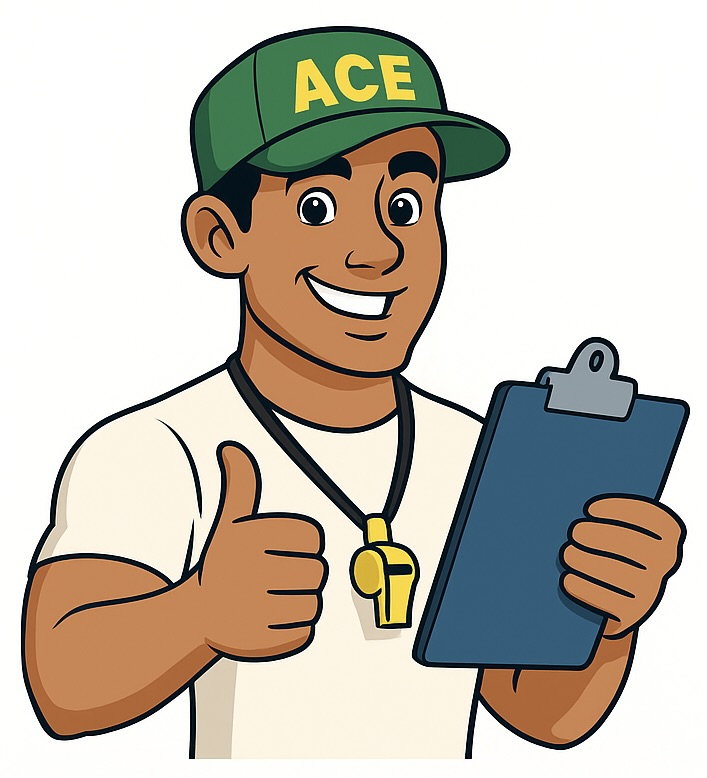

ACE
Assistant for Compliance Excellence
Hi, I’m ACE, your Assistant for Compliance Excellence! You can ask me questions like:
"Who is the Compliance reviewer for Operations?"
Assistant for Compliance Excellence
Hi, I’m ACE, your Assistant for Compliance Excellence! You can ask me questions like:
"Who is the Compliance reviewer for Operations?"
ACE currently knows a handful of common Compliance workflows. It doesn’t know everything yet — but with more training and a RAG (Retrieval-Augmented Generation) upgrade, it can reference your process documents for smarter answers.
If the server has been idle for 15+ minutes, the first reply can take up to ~60 seconds while it revs up. After that, responses are quick.